Seguridad alimentaria
Curso Seguridad alimentaria, Área Control de Calidad.
Introducción
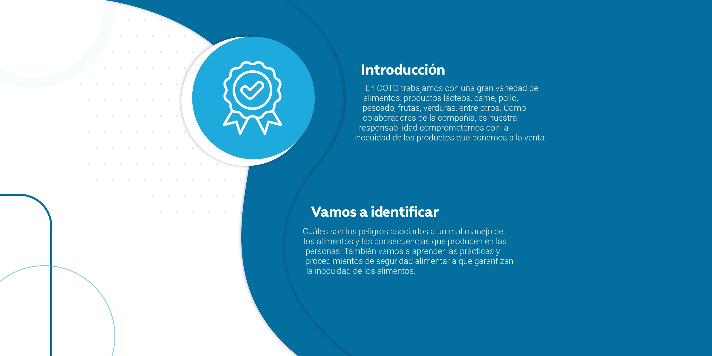
Introducción. En COTO trabajamos con una gran variedad de alimentos: productos lácteos, carne, pollo, pescado, frutas, verduras, entre otros. Como colaboradores de la compañía, es nuestra responsabilidad comprometernos con la inocuidad de los productos que ponemos a la venta.
Vamos a identificar cuáles son los peligros asociados a un mal manejo de los alimentos y las consecuencias que producen en las personas. También vamos a aprender las prácticas y procedimientos de seguridad alimentaria que garantizan la inocuidad de los alimentos.
Objetivos de aprendizaje
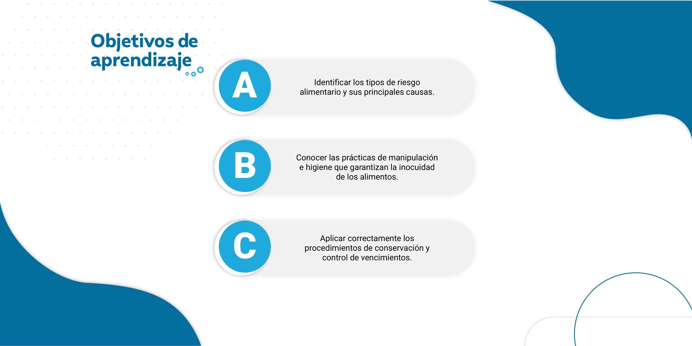
Objetivos de aprendizaje. A: Identificar los tipos de riesgo alimentario y sus principales causas. B: Conocer las prácticas de manipulación e higiene que garantizan la inocuidad de los alimentos. C: Aplicar correctamente los procedimientos de conservación y control de vencimientos.
Índice de contenidos
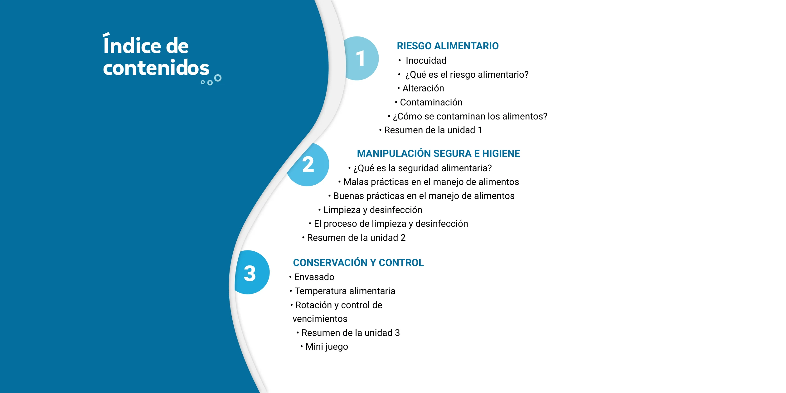
Unidad 1, Riesgo alimentario: inocuidad, qué es el riesgo alimentario, alteración, contaminación, cómo se contaminan los alimentos y resumen de la unidad 1.
Unidad 2, Manipulación segura e higiene: qué es la seguridad alimentaria, malas prácticas en el manejo de alimentos, buenas prácticas en el manejo de alimentos, limpieza y desinfección, el proceso de limpieza y desinfección y resumen de la unidad 2.
Unidad 3, Conservación y control: envasado, temperatura alimentaria, rotación y control de vencimientos, resumen de la unidad 3 y mini juego.
Unidad 1 — Riesgo alimentario
Arranca la Unidad 1: Riesgo alimentario.
Inocuidad
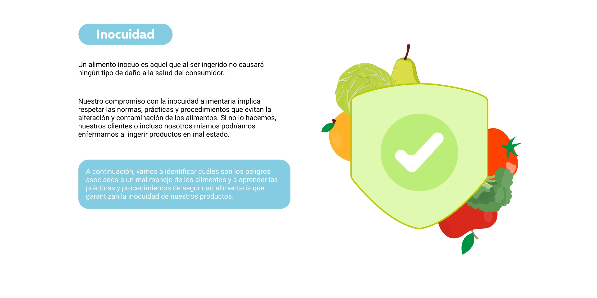
Tocá el ícono para ver cómo se aplica esto en la práctica.
Un alimento inocuo es aquel que al ser ingerido no causará ningún tipo de daño a la salud del consumidor.
Nuestro compromiso con la inocuidad alimentaria implica respetar las normas, prácticas y procedimientos que evitan la alteración y contaminación de los alimentos. Si no lo hacemos, nuestros clientes o incluso nosotros mismos podríamos enfermarnos al ingerir productos en mal estado.
A continuación, vamos a identificar cuáles son los peligros asociados a un mal manejo de los alimentos y a aprender las prácticas y procedimientos de seguridad alimentaria que garantizan la inocuidad de nuestros productos.
¿Qué es el riesgo alimentario?
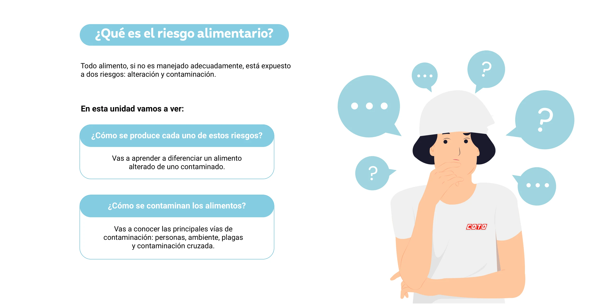
Todo alimento, si no es manejado adecuadamente, está expuesto a dos riesgos: alteración y contaminación.
En esta unidad vamos a ver: cómo se produce cada uno de estos riesgos. Vas a aprender a diferenciar un alimento alterado de uno contaminado.
Y también: cómo se contaminan los alimentos. Vas a conocer las principales vías de contaminación: personas, ambiente, plagas y contaminación cruzada.
Alteración
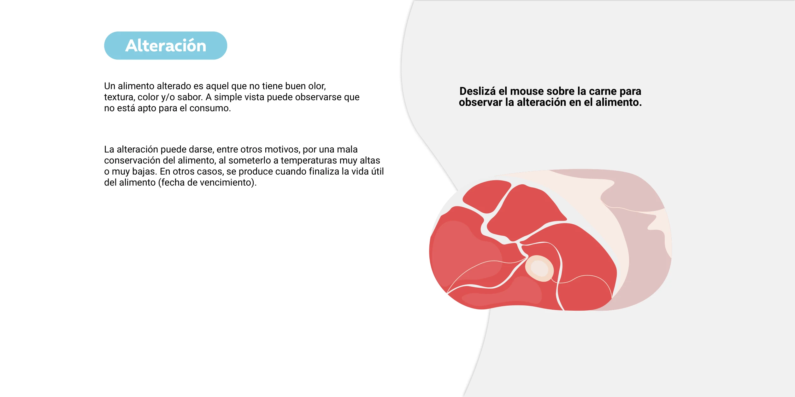
AlteradoUn alimento alterado es aquel que no tiene buen olor, textura, color y/o sabor. A simple vista puede observarse que no está apto para el consumo.
La alteración puede darse, entre otros motivos, por una mala conservación del alimento, al someterlo a temperaturas muy altas o muy bajas. En otros casos, se produce cuando finaliza la vida útil del alimento, la fecha de vencimiento.
Deslizá el mouse sobre la carne, o tocala, para observar la alteración en el alimento.
Contaminación
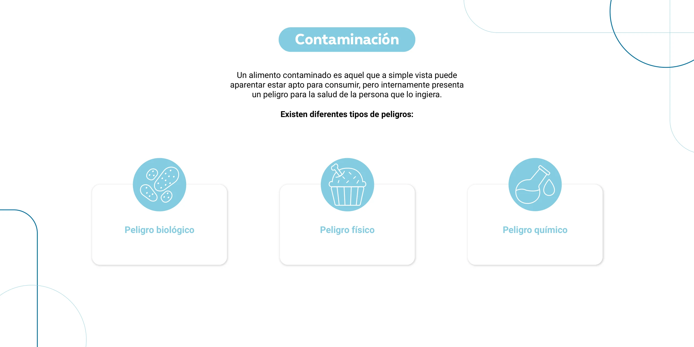
Un alimento contaminado es aquel que a simple vista puede aparentar estar apto para consumir, pero internamente presenta un peligro para la salud de la persona que lo ingiera.
Existen diferentes tipos de peligros: biológico, físico y químico. Tocá cada tarjeta para conocerlos.
¿Cómo se contaminan los alimentos?
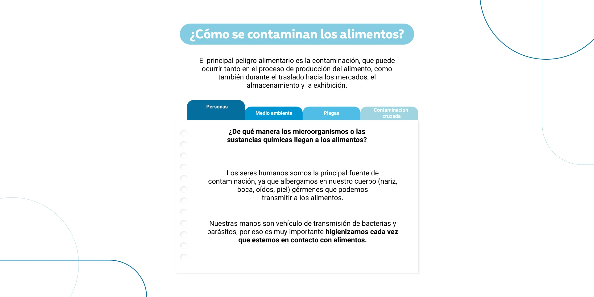
El principal peligro alimentario es la contaminación, que puede ocurrir tanto en el proceso de producción del alimento, como también durante el traslado hacia los mercados, el almacenamiento y la exhibición.
¿De qué manera los microorganismos o las sustancias químicas llegan a los alimentos? Tocá cada pestaña: personas, medio ambiente, plagas y contaminación cruzada.
Resumen de la unidad 1
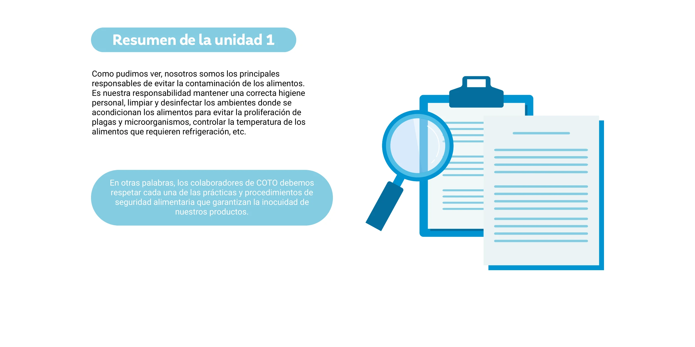
La alteración de un alimento se puede notar a simple vista.
Verdadero. A diferencia de la contaminación, la alteración se nota a simple vista: cambia el olor, la textura, el color o el sabor.
El barbijo debajo de la nariz protege igual que si estuviera bien puesto.
Falso. Si no tapa la nariz, no filtra lo que exhalamos al hablar, toser o estornudar.
Como pudimos ver, nosotros somos los principales responsables de evitar la contaminación de los alimentos. Es nuestra responsabilidad mantener una correcta higiene personal, limpiar y desinfectar los ambientes donde se acondicionan los alimentos para evitar la proliferación de plagas y microorganismos, controlar la temperatura de los alimentos que requieren refrigeración.
En otras palabras, los colaboradores de COTO debemos respetar cada una de las prácticas y procedimientos de seguridad alimentaria que garantizan la inocuidad de nuestros productos.
Unidad 2 — Manipulación segura e higiene
Arranca la Unidad 2: Manipulación segura e higiene.
¿Qué es la seguridad alimentaria?
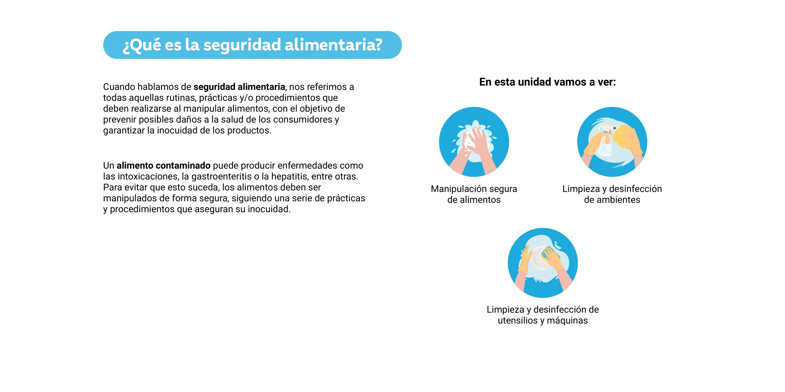
Pasá el mouse (o tocá) cada ícono para conocer qué vamos a ver en esta unidad.
Cuando hablamos de seguridad alimentaria, nos referimos a todas aquellas rutinas, prácticas y/o procedimientos que deben realizarse al manipular alimentos, con el objetivo de prevenir posibles daños a la salud de los consumidores y garantizar la inocuidad de los productos.
Un alimento contaminado puede producir enfermedades como las intoxicaciones, la gastroenteritis o la hepatitis, entre otras. Para evitar que esto suceda, los alimentos deben ser manipulados de forma segura, siguiendo una serie de prácticas y procedimientos que aseguran su inocuidad.
En esta unidad vamos a ver: manipulación segura de alimentos, limpieza y desinfección de ambientes, y limpieza y desinfección de utensilios y máquinas.
Malas prácticas en el manejo de alimentos
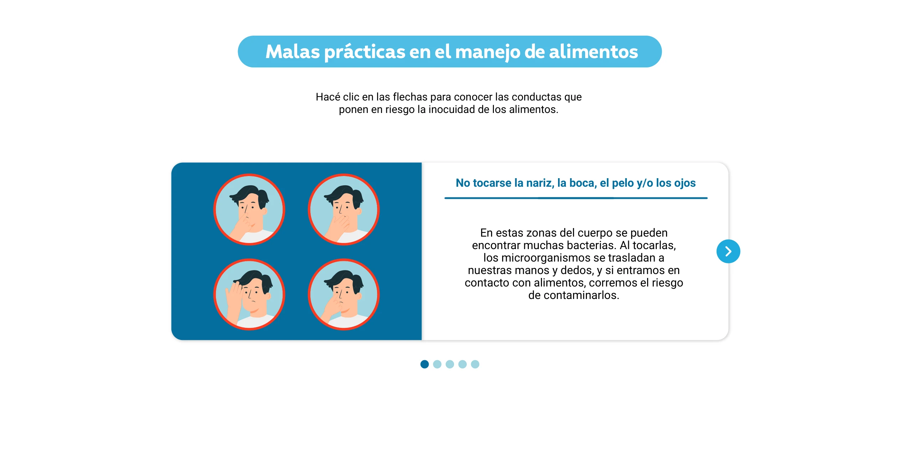
Malas prácticas en el manejo de alimentos. Hacé clic en las flechas para conocer las conductas que ponen en riesgo la inocuidad de los alimentos.
Buenas prácticas en el manejo de alimentos
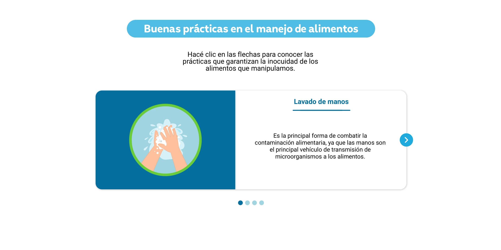
Buenas prácticas en el manejo de alimentos. Hacé clic en las flechas para conocer las prácticas que garantizan la inocuidad de los alimentos que manipulamos.
Limpieza y desinfección
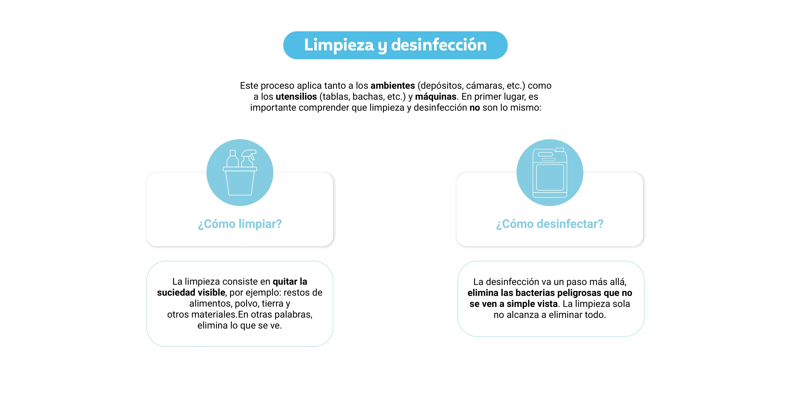
Este proceso aplica tanto a los ambientes, depósitos, cámaras, como a los utensilios, tablas, bachas, y máquinas. En primer lugar, es importante comprender que limpieza y desinfección no son lo mismo.
Tocá cada tarjeta para ver cómo limpiar y cómo desinfectar.
El proceso de limpieza y desinfección
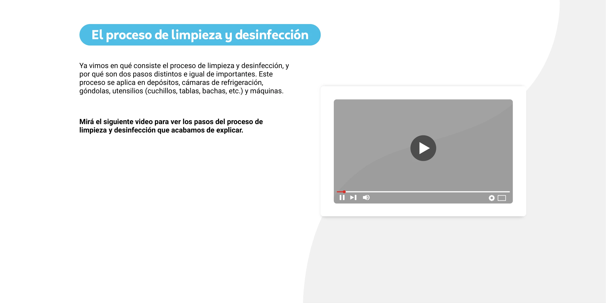
Ya vimos en qué consiste el proceso de limpieza y desinfección, y por qué son dos pasos distintos e igual de importantes. Este proceso se aplica en depósitos, cámaras de refrigeración, góndolas, utensilios —cuchillos, tablas, bachas— y máquinas.
Mirá el siguiente video para ver los pasos del proceso de limpieza y desinfección que acabamos de explicar.
Resumen de la unidad 2
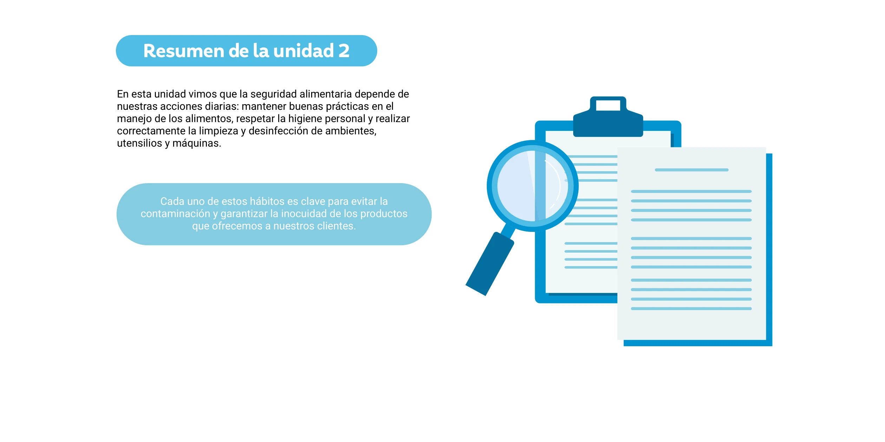
Usar la tabla de corte para cortar carne cruda es una mala práctica.
Falso. Usar la tabla está bien — lo que está mal es que la carne cruda comparta la misma mesada que otros alimentos listos para consumir.
Limpiar y desinfectar son lo mismo.
Falso. Limpiar quita la suciedad visible; desinfectar elimina las bacterias que no se ven. La limpieza sola no alcanza.
En esta unidad vimos que la seguridad alimentaria depende de nuestras acciones diarias: mantener buenas prácticas en el manejo de los alimentos, respetar la higiene personal y realizar correctamente la limpieza y desinfección de ambientes, utensilios y máquinas.
Cada uno de estos hábitos es clave para evitar la contaminación y garantizar la inocuidad de los productos que ofrecemos a nuestros clientes.
Unidad 3 — Conservación y control
Arranca la Unidad 3: Conservación y control.
Envasado
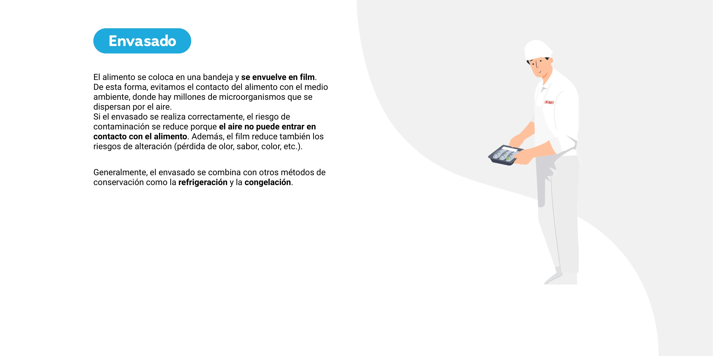
Tocá la bandeja para ver un tip práctico.
El alimento se coloca en una bandeja y se envuelve en film. De esta forma, evitamos el contacto del alimento con el medio ambiente, donde hay millones de microorganismos que se dispersan por el aire.
Si el envasado se realiza correctamente, el riesgo de contaminación se reduce porque el aire no puede entrar en contacto con el alimento. Además, el film reduce también los riesgos de alteración: pérdida de olor, sabor, color.
Generalmente, el envasado se combina con otros métodos de conservación como la refrigeración y la congelación.
Temperatura alimentaria
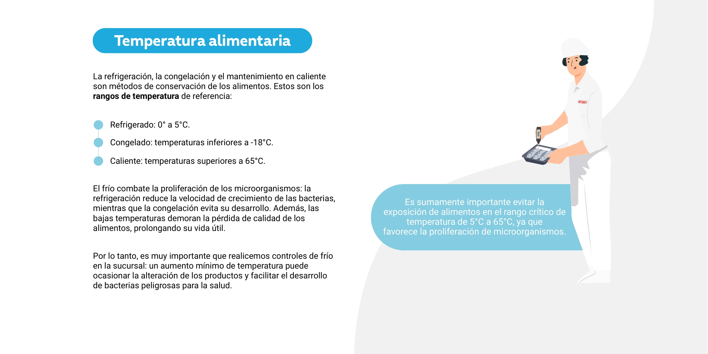
Pasá el mouse (o tocá) cada rango para ver un ejemplo real de la sucursal.
La refrigeración, la congelación y el mantenimiento en caliente son métodos de conservación de los alimentos. Estos son los rangos de temperatura de referencia: refrigerado, de 0 a 5 grados. Congelado, temperaturas inferiores a 18 grados bajo cero. Caliente, temperaturas superiores a 65 grados.
El frío combate la proliferación de los microorganismos: la refrigeración reduce la velocidad de crecimiento de las bacterias, mientras que la congelación evita su desarrollo. Además, las bajas temperaturas demoran la pérdida de calidad de los alimentos, prolongando su vida útil.
Por lo tanto, es muy importante que realicemos controles de frío en la sucursal: un aumento mínimo de temperatura puede ocasionar la alteración de los productos y facilitar el desarrollo de bacterias peligrosas para la salud.
Es sumamente importante evitar la exposición de alimentos en el rango crítico de temperatura de 5 a 65 grados, ya que favorece la proliferación de microorganismos.
Rotación y control de vencimientos
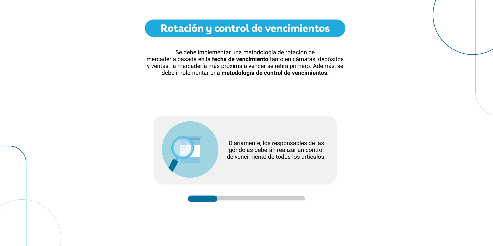
Arrastrá o mové la barraSe debe implementar una metodología de rotación de mercadería basada en la fecha de vencimiento tanto en cámaras, depósitos y ventas: la mercadería más próxima a vencer se retira primero. Además, se debe implementar una metodología de control de vencimientos.
Resumen de la unidad 3
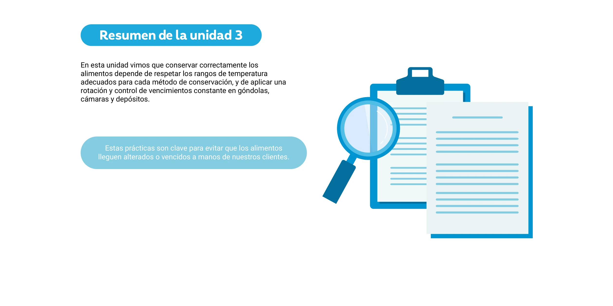
El rango de 5° a 65°C es el más crítico para la multiplicación de microorganismos.
Verdadero. Por eso hay que evitar que los alimentos pasen tiempo en ese rango de temperatura.
Envasar el alimento en film ayuda a evitar el contacto con el aire.
Verdadero. Sin aire en contacto con el alimento, se reduce el riesgo de contaminación y de alteración.
En esta unidad vimos que conservar correctamente los alimentos depende de respetar los rangos de temperatura adecuados para cada método de conservación, y de aplicar una rotación y control de vencimientos constante en góndolas, cámaras y depósitos.
Estas prácticas son clave para evitar que los alimentos lleguen alterados o vencidos a manos de nuestros clientes.
Mini juego: ¿qué está mal en esta imagen?
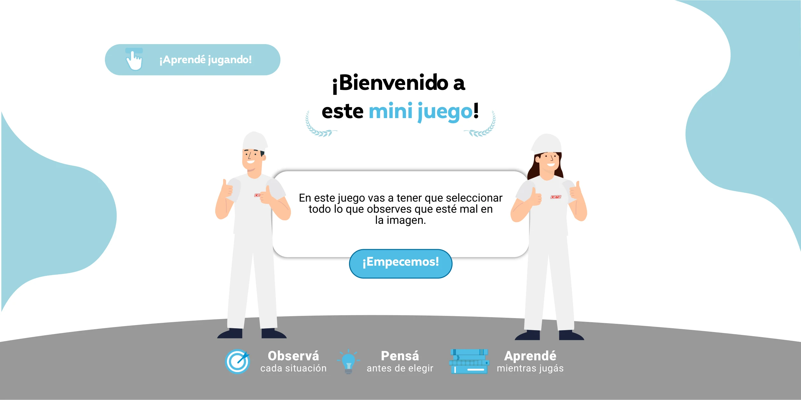
¡Bienvenido a este mini juego! En este juego vas a tener que seleccionar todo lo que observes que esté mal en la imagen. Observá cada situación, pensá antes de elegir y aprendé mientras jugás.
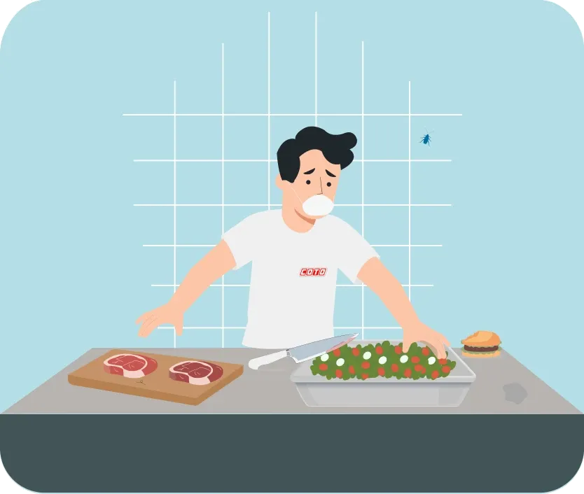
Plagas Mala higiene Producto alterado Malas prácticas Toca los alimentos Contaminación cruzada¿Qué observás en esta imagen que esté mal?
💡 Te destacamos primero lo que más te costó la vez pasada.
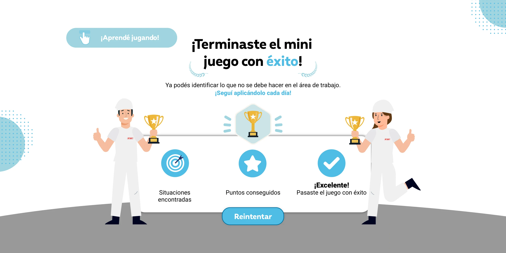
Últimos consejos
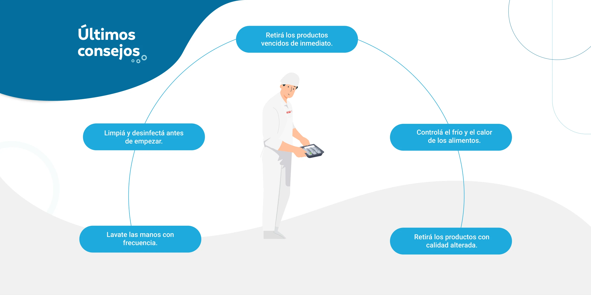
Últimos consejos. Lavate las manos con frecuencia. Limpiá y desinfectá antes de empezar. Retirá los productos vencidos de inmediato. Controlá el frío y el calor de los alimentos. Retirá los productos con calidad alterada.
¡Felicitaciones!
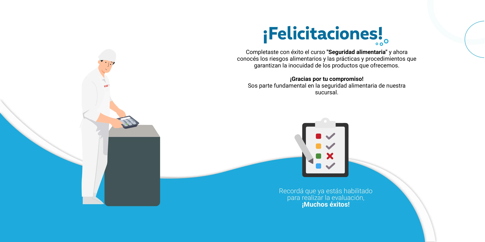
¡Felicitaciones! Completaste con éxito el curso "Seguridad alimentaria" y ahora conocés los riesgos alimentarios y las prácticas y procedimientos que garantizan la inocuidad de los productos que ofrecemos. ¡Gracias por tu compromiso! Sos parte fundamental en la seguridad alimentaria de nuestra sucursal. Recordá que ya estás habilitado para realizar la evaluación. ¡Muchos éxitos!
¡Hola, ! 👋
Medalla de bronce
- 🥇Oro395 puntos o más
- 🥈Platade 350 a 394
- 🥉Broncemenos de 350
Recordá que la evaluación es un cuestionario aparte, que vas a encontrar en la plataforma ahora que terminaste todo el contenido.
Repaso rápido de todo el curso
Lo que viste en las 3 unidades, en una pantalla, para tener a mano en el día a día.
Unidad 1 · Riesgo alimentario
- Inocuidad
- Un alimento inocuo no causa daño al consumidor. Es el objetivo de todo lo demás.
- Alteración
- Se nota: mal olor, textura, color o sabor. Mala conservación o fin de la vida útil.
- Contaminación
- No se nota a simple vista. Peligro biológico, físico o químico.
- Vías de contaminación
- Personas, medio ambiente, plagas y contaminación cruzada.
Unidad 2 · Manipulación segura
- Malas prácticas
- Tocarse la cara, toser sobre los alimentos, fumar, comer o masticar chicle, usar joyas.
- Buenas prácticas
- Lavado de manos, ropa de trabajo limpia, cubrir cortes y heridas, informar síntomas.
- Limpieza
- Quita la suciedad visible: elimina lo que se ve.
- Desinfección
- Elimina las bacterias que no se ven. La limpieza sola no alcanza.
Unidad 3 · Conservación y control
- Envasado
- Bandeja + film: menos contacto con el aire, menos contaminación y menos alteración.
- Temperaturas
- Refrigerado 0° a 5°C · congelado bajo -18°C · caliente sobre 65°C.
- Rango crítico
- Entre 5°C y 65°C los microorganismos se multiplican: evitá exponer alimentos ahí.
- Rotación
- Lo más próximo a vencer se retira primero, en cámaras, depósitos y ventas.
Para tu día a día
- Lavate las manos con frecuencia.
- Limpiá y desinfectá antes de empezar.
- Retirá los productos vencidos de inmediato.
- Controlá el frío y el calor de los alimentos.
- Retirá los productos con calidad alterada.